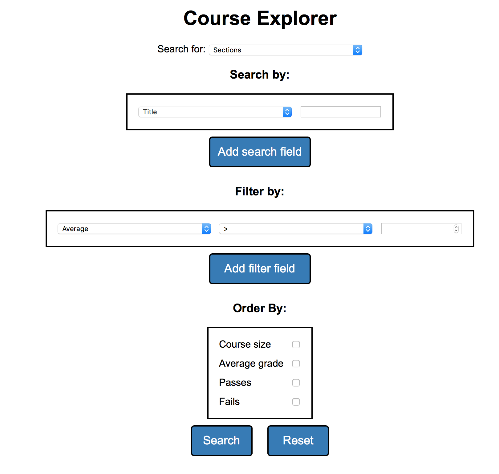

Insight UBC
Designed a robust backend able to parse JSON data kindly given by the UBC Planning and Institutional Research Office. The backend is used to perform useful queries on the data such as queries on courses, past course averages, and room scheduling (and displaying the timetable along with the schedule). This was the term project for CPSC 310 (intro to software engineering)
Programs/languages used: Eclipse (Java), Genymotion, JUnit, JSON
